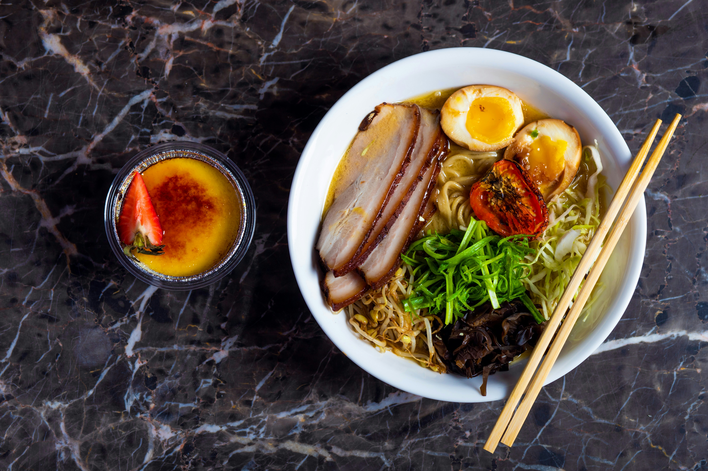

Ramen
Home

Photo by Stephen Bedase on Unsplash
Homemade Ramen Recipe
Hello, today I'm gonna show you how to make an easy ramen hack from home,
so read it carefully and see how it goes!
Ingredients
- Ramen noodle.
- Chicken Dashi for the brooth.
- Tare.
- Chashu.
- Nitamago.
- La-yu
Steps
- To make the dashi, bring chicken broth up to a simmer in a pot, then once up to a simmer remove from heat, let cool for 2 minutes, then add the mushrooms and kombu.
- Blanch the pork belly by adding to a pot, covering with water, then bringing to a simmer, and draining the water immediately.
- To make the tare and chashu, add low-sodium soy sauce to a pot with the rest of your tare ingredients, and bring to a simmer. Once it is simmering, turn the heat to low, and add the pork.
- To make the nitamago, make jammy boiled eggs by boiling for around 6 minutes, then peeling them carefully. Place the peeled eggs in a bowl, and pour over the strained reserved tare over the eggs.
- Now, we’re going to make the chili oil by adding oil and the mountain of garlic to a pot— bring to a simmer, and keep a close eye on it. Remove from the heat once it has started to reach a golden color, then add the ground chili or chili flakes.
- After making your noodles and slicing your pork belly, all you have to do is assemble! Add your noodles to the bowl, pour over the dashi, add some spoonfuls of tare, slice and add your eggs and pork belly, and add your toppings! I went with green onions, homemade chili oil, and nori.
More Recipes
- Beef Rendang
- Fried Rice